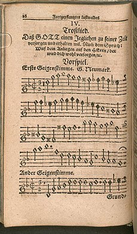
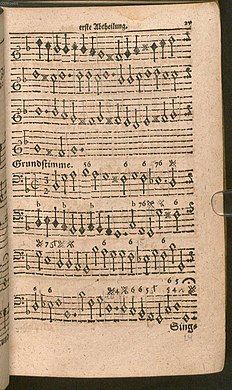
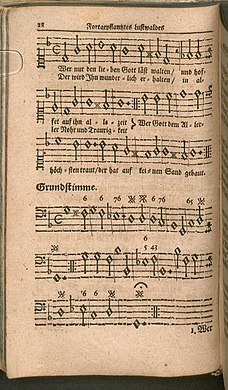

Many people sing this hymn unaware
that it paraphrases Psalm 90, partly because this text speaks so
immediately to the human condition. Since the middle of the 19th
century, it has usually been joined to this tune named for the London
parish where the composer was organist
生命聖詩 - 284
等候倚靠 (If Thou but Suffer God to Guide Thee)
1 If you but trust in God to guide you
and place your confidence in him,
you'll find him always there beside you
to give you hope and strength within;
for those who trust God's changeless love
build on the rock that will not move.
2 Only be still and wait his pleasure
in cheerful hope with heart content.
He fills your needs to fullest measure
with what discerning love has sent;
doubt not our inmost wants are known
to him who chose us for his own.
3 Sing, pray, and keep his ways unswerving,
offer your service faithfully,
and trust his word; though undeserving,
you'll find his promise true to be.
God never will forsake in need
the soul that trusts in him indeed.
Georg Neumark (b. Langensalza, Thuringia, Germany, 1621; d. Weimar,
Germany, 1681) lived during the time of the Thirty Years' War, when
social and economic conditions were deplorable. He had personal
trials as well. On his way to Königsberg to study at the university,
traveling in the comparative safety of a group of merchants, he was
robbed of nearly all his possessions. During the next two years he
spent much of his time looking for employment. He finally secured a
tutoring position in Kiel. When he had saved enough money, he
returned to the University of Königsberg and studied there for five
years. In Königsberg he again lost all his belongings, this time in
a fire. Despite his personal suffering Neumark wrote many hymns in
which he expressed his absolute trust in God. In 1651 he settled in
Weimar, Thuringia, where he became court poet and archivist to Duke
Johann Ernst and librarian and registrar of the city. Neumark wrote
thirty-four hymns, of which "If You But Trust in God to Guide You"
has become a classic.
Further Reflections on Confessions and Statements of Faith References
Difficult times occur in
the lives and communities of God’s people because this is a fallen world.
The confessions demonstrate this perspective:
Belgic Confession, Article 15 teaches that “…by the disobedience of Adam
original sin has been spread through the whole human race…a corruption
of the whole human nature...” As a result, God’s people are “guilty and
subject to physical and spiritual death, having become wicked, perverse,
and corrupt in all [our] ways” (Article 14). In addition, “The devils
and evil spirits are so corrupt that they are enemies of God and of
everything good. They lie in wait for the church and every member of it
like thieves, with all their power, to destroy and spoil everything by
their deceptions” (Article 12).
Our World Belongs to God continues to affirm that “God has not abandoned
the work of his hands,” nevertheless “our world, fallen into sin, has
lost its first goodness...” (paragraph 4). And now “all spheres of
life—family and friendship, work and worship school and state, play and
art—bear the wounds of our rebellion” (paragraph 16).
Yet, in a fallen world,
God’s providential care is the source of great assurance, comfort and
strength. Through these thoughts, our trust in God is inspired.
Belgic Confession, Article 13 is a reminder that God’s providence
reassures us that God leads and governs all in this world “according to
his holy will…nothing happens in this world without his orderly
arrangement.” Further, this Confession identifies that this “gives us
unspeakable comfort since it teaches us that nothing can happen to us by
chance but only by the arrangement of our gracious heavenly Father, who
watches over us with fatherly care...in this thought we rest.”
Belgic Confession, Article 13, is a reminder that much is beyond human
understanding and so “we do not wish to inquire with undue curiosity
into what God does that surpasses human understanding and is beyond our
ability to comprehend.”
In Heidelberg Catechism, Lord’s Day 9, Question and Answer 26 we testify
that we “trust God so much that [we] do not doubt that he will provide
whatever [we] need for body and soul and will turn to [our] good
whatever adversity he sends upon [us] in this sad world.”
In Heidelberg Catechism, Lord’s Day 10, Question and Answer 28, we are
assured that through our trust in the providence of God we can have
“good confidence in our faithful God and Father that nothing in creation
will separate us from his love.”
When we pray the Lord’s Prayer we ask not to be brought into the time of
trial but rescued from evil. In doing so we ask that the Lord will
“uphold us and make us strong with the strength of your Holy Spirit so
that we may not go down to defeat in this spiritual struggle...”
(Heidelberg Catechism, Lord’s Day 52, Question and Answer 127)
Belgic Confession, Article
26 speaks about the intercession of Christ as the ascended Lord. “We have no
access to God except through the one and only Mediator and Intercessor,
Jesus Christ the Righteous.” We, therefore, do not offer our prayers as
though saints could be our intercessor, nor do we offer them on the “basis
of our own dignity but only on the basis of the excellence and dignity of
Jesus Christ, whose righteousness is ours by faith.” Because Jesus Christ is
our sympathetic High Priest, we approach the throne “in full assurance of
faith.”
No greater assurance can
be found than that expressed in Heidelberg Catechism, Lord’s Day 1, Question
and Answer 1: “I am not my own by I belong—body and soul, in life and in
death—to my faithful Savior, Jesus Christ.”
In all difficult times, we eagerly await the final day when God “will set
all things right, judge evil, and condemn the wicked” (Our World Belongs to
God, paragraph 57).
紐馬克在1657年將此聖詩譜上曲發表。 巴哈（Johann Sebastian Bach）曾將此調用在他的大合唱中。 孟德爾頌（Felix
Mendelssohn）也把它編入 Paulus,No.8，作「主啊，我將我的靈魂交給你」（To
Thee, O Lord, I Yield My Spirit）的配曲。 信義教會特愛此調，有四百首聖詩都配用此調。
曲調 "NEUMARKk" 取自作曲者名字，曲調又稱 "WER
NUR DEN LIEBEN GOTT LASST WALTEN" 是德文首行意思為「你若甘願使上帝引導」，最先見於紐馬克1657年在耶那 (Jena)出版的 "Musikalisch
poetischer Lustwald"。
孟德爾頌將此曲調用於神劇「聖保羅」(St.
Paulus) 第九樂章後段聖詠「主阿!讓我就近你」。
巴哈引用這個曲調 21 次，他用於
清唱曲第21號「主我的上帝，我的心靈悲痛」(Ich
hatte viel Bekuemmernis, BWV21)的第九樂章聖詠; 清唱曲第27號「誰知道我最後的時辰多近 ？」(Werweiss，wie
nahe mir mein Ende, BWV27)第一樂章合唱; 清唱曲第84號「我很滿意我的立腳地」(Ich
bin vergnugt mit meinem Glucke, BWV 84)第五樂章聖詠;
When Georg Neumark was 18 years old, he was traveling across Germany to school
when he was robbed of all his personal possessions and money. He spent the next
two years looking for work amidst the economic hardships of the Thirty Years
War. Finally, at the age of 20, he found employment as a tutor for a judge in
Kiel. He was apparently so relieved and grateful that later that night he wrote
this text of trust and gratitude, saying, “This good fortune, which came so
suddenly and, as it were, from heaven, so rejoiced my heart that I wrote my hymn
‘Wer
nur...’
to the glory of my God on that first day” (Psalter
Hymnal Handbook,
611). Neumark knew of the trials we face every day – whether they are economic,
emotional, spiritual, or physical. And he knew that, even if it is not how we
would have first asked or imagined, God provides for His people. During those
two years of living in the unknown, Neumark knew one thing: God was always with
him. Later in his life he again lost all his possessions to a fire, but he had
these words of trust to say in the face of adversity. And in the face of our own
hardships, we sing these words of trust, knowing that God is with us.
Text:
Neumark’s original German text, written in 1641, consisted of seven verses. In
1855, Catherine Winkworth translated the text into English, and in 1863
drastically revised her translation, the first line now reading, “If thou but
suffer God to guide thee.” Her revisions of the original stanzas one, three, and
seven are found in most modern hymnals. Changes in word choice abound between
hymnals, but despite different wording, the different texts all ultimately say
the same thing. For example, in the Psalter Hymnal, the third stanza
reads, “Sing, pray and keep his ways unswerving, offer your service
faithfully...” compared to the same line in the Presbyterian Hymnal,
which reads, “Sing, pray, and swerve not from God’s ways, but do thine own part
faithfully.” Other changes between hymnals amount to changing “thy” and “thine”
and other antiquated language to a more modern text.
Tune:
The tune WER NUR DEN LIEBEN GOTT (same name as original German hymn) was
composed by Neumark in 1657 to accompany his text. This became a very popular
tune, used in organ variations by Lutheran composers, and in a number of Bach’s
cantatas. This is a rather interesting tune because, as Paul Westermeyer states,
it can be sung at a number of different tempos, and the meaning of the text will
change depending on the speed. For example, you would sing the hymn at a faster
tempo when celebrating God’s faithfulness, and at a much slower tempo when
singing it in a time of crisis or hardship. The words stay the same, but the
meaning changes quite drastically depending on how fast you sing those words.
For example, Madeline Robison's slower version in a minor key speaks of
heartache much more than Bach's Orgel Buchlein, BWV 607.
Notes
Published in 1657 (see
above) WER NUR DEN LIEBEN GOTT is also known as NEUMARK. Johann S. Bach (PHH
7) used the tune in its isorhythmic shape (all equal rhythms) in his
cantatas 21, 27, 84, 88, 93, 166, 179, and 197. Many Lutheran composers have
also written organ preludes on this tune.
WER NUR DEN LIEBEN GOTT is a
bar form (AAB) with rhythmic interest and mainly stepwise melodic lines. Sing
in a steady unison on stanzas 1 and 3 and in harmony on stanza 2 with a
quieter organ registration.
--Psalter Hymnal
Handbook
When/Why/How:
Throughout the year we have reasons to remind ourselves to rely on God alone for
our help and our safety. This hymn is thus appropriate at any time during the
liturgical calendar, but especially during times of crisis in your church or
when you need a reminder of God’s faithfulness. It can also be very powerful in
services of celebration in which you remember and re-tell the stories of how God
has been faithful to you and your church.
[Lawrence L. Lohr wrote an informative article in The Hymn (Vol.
49, No. 3, July 1998) titled “‘If thou but suffer God to guide thee’: The
Journey of a Lutheran Hymn.” You may read and download a copy of that article here.]
Some of J. S. Bach’s settings
Johann Sebastian Bach clearly admired this tune and its associated text. At
least 8 of Bach’s cantatas feature this chorale melody. It was also employed in
a number of his compositions for solo organ. Here is a chorale harmonization
that may have been included in one of Bach’s many lost cantatas. (The score for
this distinctive setting may be viewed here.)
Within Bach’s cantatas, there are numerous variations on this chorale melody,
often using the text from Neumark’s hymn. For example, near the end of the
cantata Ich
hatte viel Bekümmernis (“I have great heaviness in my heart,” BWV 21), is a
choral movement which opens with soloists repeating the words “Sei
nun wieder zufrieden, meine Seele, denn der Herr tut dir Guts” (“Be
satisfied again now, my soul, for the Lord does good to you”). After several
repetitions of this affirmation, the entire tenor section of the choir begins
singing the second stanza from Neumark’s hymn to the tune he created for it:
What help to us are heavy sorrows
What help to us are our ‘woe’ and ‘alas’?
What does it help, that we every morning
sigh over our troubles?
We make our cross and suffering
only greater through sadness.
After the tenors finish these words, the soloists continue repeating that single
line while the sopranos sing the hymn’s fifth stanza:
Do not think in the heat of your distress
that you have been abandoned by God
and that that man sits in God’s bosom
who always feeds on good fortune.
The course of time changes many things
and appoints his end to everything.
The chorus Sei
nun wieder zufrieden, meine Seele is performed here by the Monteverdi Choir
with the English Baroque Soloists, conducted by John Eliot Gardiner. The
soloists are Katherine Fuge, soprano; Robin Tyson, alto; Vernon Kirk, tenor; and
Jonathan Brown, bass
Felix Mendelssohn’s cantata Wer
nur den lieben Gott läßt walten
In 1829, Felix Mendelssohn (channeling Bach, as he sometimes did) composed a
4-movement cantata based on Wer
nur den lieben Gott läßt walten. Here is the final chorus of that work (I
couldn’t find a complete performance on YouTube, so buy a recording for
yourself; you’ll be glad you did!) The performers here are the Stuttgart Chamber
Chorus and Orchestra, conducted by Frieder Bernius. The recording is from a
multi-volume set of Mendelssohn’s church music.
Words:Georg Neumark (b. Mar. 16, 1621; d. July 18,
1681); English translation, Catherine Winkworth (b. Sept. 13, 1827; d.
July 1, 1878)
Music:Neumark, (also calledBremen), by Georg
Neumark
Note: The hymn was written in seven stanzas, in 1641. Catherine
Winkworth made two English translations, the first in 1855. Many hymnals
use only three of the stanzas (CH-1, 3, and 4 of what the Cyber Hymnal
calls “Winkworth’s original translation”). That reduction is
unfortunate, as the other stanzas also contain some good teaching.
Georg Neumark himself wrote the tune which now bears his name. In the
nearly four centuries since, it has been used for about four hundred
hymns! In addition, Bach used it in four different cantatas, and for an
organ selection. Mendelssohn also used the tune in his oratorioSt.
Paul.
The hymn is actually rooted in the personal experiences
of the author, and is a great testament to his faith. Many spiritual
insights grew out of his prevailing hardship when a series of calamities
descended upon him.
At the age of twenty, Neumark was robbed by a highwayman, while
traveling to take up studies at the University of Konigsberg. All he was
left with was a prayer book, and a few coins that he’d sewn in his
clothing for safe-keeping. With no money to live on, let alone further
his education, he was forced to turn back and seek employment. He
wandered from city to city, unable to find work for some time. But it
was during those days of frustrated hopes and severe privation that many
of his thirty-four hymns were born.
When he was unexpectedly hired as a tutor in the home of a wealthy
judge in Kiel, he was filled with praise to God for His provision. He
wrote this hymn, calling it “A Song of Comfort: God will care for and
help everyone in his own time.” and basing the song on a verse from
Psalms.
“Cast your burden on the LORD, And He shall sustain you; He shall
never permit the righteous to be moved” (Ps. 55:22).
CH-1) If thou but suffer God to guide thee
And hope in Him through all thy ways,
He’ll give thee strength, whate’er betide thee,
And bear thee through the evil days.
Who trusts in God’s unchanging love
Builds on the rock that naught can move.
This is followed by a warning against the opposite, allowing anxious
cares to overwhelm us (cf. Phil. 4:6):
CH-2) What can these anxious cares avail thee
The never ceasing moans and sighs?
What can it help, if thou bewail thee
O’er each dark moment as it flies?
Our cross and trials do but press
The heavier for our bitterness.
Patient waiting on God is the answer, when we have done all that can
humanly be done. He knows our need (cf. Matt. 6:31-33).
CH-3) Be patient and await His leisure
In cheerful hope, with heart content
To take whate’er thy Father’s pleasure
And His discerning love hath sent,
Nor doubt our inmost wants are known
To Him who chose us for His own.
The loving discipline of the Lord, though painful at the time, is
meant to purify our motives. God will restore joy, and bring new
blessing, in His good time (Heb. 12:3-11).
CH-4) God knows full well when time of gladness
Shall be the needful thing for thee.
When He has tried thy soul with sadness
And from all guile has found thee free,
He comes to thee all unaware
And makes thee own His loving care.
Though we struggle with trials, we can trust the love and grace of
God (Phil. 4:19).
CH-7) Sing, pray, and keep His ways unswerving,
Perform thy duties faithfully,
And trust His Word: though undeserving,
Thou yet shalt find it true for thee.
God never yet forsook in need
The soul that trusted Him indeed.
Questions:
1) What important lesson(s) do you see highlighted by this hymn?
2) What other hymns treat our trials in a practical and realistic
way?
If thou but suffer God to guide thee,
and hope in God through all thy ways,
God will give strength, whate’er betide thee,
and bear thee through the evil days.
Who trusts in God’s unchanging love
builds on the rock that naught can move.
Great translators can make the difference in how future generations will use
hymns. Nineteenth-century England had two translators to which today’s hymn
singers owe much. What John Mason Neale (1818-1866) was to the translation of
Latin and Greek hymns in the mid-nineteenth century, so was Catherine Winkworth
(1827-1878) to the promulgation of German hymnody in English toward the
century’s end.
At a time when increasing interest in the theology of continental Europe meant
the Protestant church in Britain was taking an interest in the Pietism of
Germany, Winkworth sought to explore the hymn texts of what scholar and hymn
writer Erik Routley called “the real birthplace of congregational hymnody.”
Originally, Winkworth undertook the translation of nearly 400 texts by some 170
authors as a personal devotional exercise, revealing her expert skill in the
manipulation of language. Her second published volume of texts, Lyra Germanica:
Second Series: The Christian Life (1858), contained a single text by poet Georg
Neumark, “If Thou But Suffer God to Guide Thee.”
Neumark (1621-1681) first published in 1657 in Jena his original text, “Wer nur
den lieben Gott lässt walten,” in his Fortgepflantzter musikalisch-poetischer
Lustwald. It contained seven stanzas of six lines, set to an original g-minor
tune in a dance-like triple meter. He composed it after securing a tutoring post
at Kiel, a point of much relief for him after a period of misfortune and
instability.
This Trostlied or “song of consolation” admonishes Christians to put their faith
wholly in God. The hymn draws on parts of Psalm 55 as well as 1 Peter 3:8-15,
the epistle for the fifth Sunday after Trinity, which contains instructions to
honor life and seek peace. This text is especially poignant in the context of
the atrocities and violence of the Thirty Years’ War (1618–1648), which would
have still been fresh in the minds of the singers.
The tune itself has had its own journey. The haunting melody has been used in
various contexts by artists from J.S. Bach (1685-1750) to Lloyd Pfautsch
(1921-2003).
Recently, Neumark’s tune was set to a text in the Book of Praise (Presbyterian
Church in Canada, 1997) by American hymn writer Pat Michaels, which explores the
many facets of healing (“Sometimes a Healing Word is Comfort”).
Neumark’s hymn (in Danish) is also featured in the 1987 Academy Award-winning
Danish film Babettes Gœstebud (Babette’s Feast), and thus has traveled,
according to hymnologist Lawrence Lohr, “from Jena in Germany to Oscar night in
Hollywood.”
Winkworth is known for her sensitivity to the original German in her
translations. She said, “a hymn that sounds popular and homelike in its own
language must sound so in ours if it is to be really available for devotional
purposes, and it seems to me allowable for this object to make such alterations
in the meter as lie in the different nature of the language.”
In 1863, Winkworth published the famous Chorale-Book for England, containing
about 200 of her translations set to music. In it, her treatment of Neumark’s
text is readjusted to fit the meter of his tune. Her translations reflect the
Pietistic tenor of the time and her Evangelical Lutheran upbringing.
Winkworth enjoyed a measure of renown in her own time, and was “a pioneer in
women’s higher education,” according to church historian Martin E. Marty. Dr.
Marty recalls seeing a one-act play with an all female cast, in which Winkworth
was the heroine. He characterizes Winkworth as a sort of “proto-feminist” who
was possessed of “a hunger for learning and self-expression.”
Sacred music scholar Robin A. Leaver offers a fitting summary of Winkworth’s
contribution to hymnody, saying that she “faithfully transplanted Germany’s best
hymns and made them bloom with fresh beauty in their new gardens.”
Ms. Donaldson is a student of Dr. Michael Hawn’s in the master of sacred music
program at Perkins School of Theology.
is a 1641 hymn by Georg
Neumark, who also composed the melody for it. It has seven verses and
deals with the Christian putting their trust in God. Its author referred to it
as a "Trostlied" or song of consolation and it first appeared in his Fortgepflantzer
musikalisch-poetischer Lustwald (published
in Jena in
1657). It also appeared in Johann
Crüger's 1672 Praxis
pietatis melica and in the first part of Johann
Anastasius Freylinghausen's 1704 Geistreiches
Gesangbuch.[1] It
has inspired musical settings, and is part of current German hymnals, both
Protestant and Catholic.
Twenty other
melodies have since been written for the text, though none have reached the same
popularity as the original, Zahn
No. 2778.[2] The
original melody has a wide usage in Protestant hymnody, including several other
texts. Neumark's original is in the dorian
mode, although later settings, such as by Bach, render this into G
harmonic minor.
In his 1657
hymnbook, Fortgepflantzter
musikalisch-poetischer Lustwald,
Neumark devoted five pages to the text, a prelude, melody and accompaniment of
the hymn "Wer
nur den lieben Gott läßt walten".[1]
·

1st page, instrumental introduction, violin 1, beginning of violin 2
·

2nd page, violin 2 continued, figured bass
·

3rd page, melody with text of the first stanza, figured bass
Johann Sebastian Bach repeatedly used the
hymn tune in his compositions, most notably in BWV
93, his cantata of the same name, for the fifth Sunday after Trinity,
composed for 9 July 1724. Its text is based on Neumark's original, which is
retained verbatim in the first and last verses and rewritten elsewhere. The same
melody was set to different words in other hymns, notably "Wer
weiß, wie nahe mir mein Ende"
("Who knows how near is my end?"). Cantatas BWV
21, BWV
27, BWV
84, BWV
88, BWV
166, BWV
179 and BWV
197 use the original melody, with words taken from one or other of
the texts.[4]Cantata
21 links two stanzas with a three-part fugue (Sei nun wieder
zufrieden, meine Seele); the tenor and soprano sing the cantus firmus. BWV
434 setting of this chorale is one of Bach's most remarkable of SATB
harmonizations.
BWV 642 in the Orgelbüchlein is
a chorale
prelude for organ, with the hymn tune as its cantus firmus; whilst BWV
647 in the Schübler
Chorales is an organ transcription of the fourth movement of the
cantata BWV
93.[5] In
addition, two organ adaptations of the hymn are included in the Kirnberger
Collection - BWV 690 (with a following figured basso-chorale) and BWV
691 (with an interesting variant and additional interludes). Another variant,
the chorale prelude BWV 691a, can be found in the Klavierbüchlein
für Wilhelm Friedemann Bach.[6]
Ralf Grössler
included a meditation on the hymn's original melody in his 1988 Missa Dei
Parvulorum. David
Maslanka used the hymn tune as the core melody/theme for his wind
ensemble work, In Memoriam (1989). In 2002 a new three-part a capella
setting of the hymn was produced for the German movie Vaya
con Dios.
The tune of "Wer
nur den lieben Gott" is sometimes set to other hymns. It is used for "Abide with
Us, the Day is Waning,"[9] an
English translation of the Danish hymn "Bliv hos os, Menster Dagen heider!" by
Caspar Johannes Boye. The tune is also used for "I Leave All Things to God's
Direction," an English translation of "Ich halte Gott in allem stille" by Salomon
Franck.[10]
The hymn is sung
in Danish in the film Babette's
Feast, at the end of the dinner scene.[11] In
the German comedy "Vayos
con Dios" the Gloria is sung at the Jesuits' conventual Sunday Mass.
They sing a three-part setting of Neumark's hymn, arranged for the film by the
organist Tobias Gravenhorst, who plays himself in the film.
Catherine Winkworth is probably not a name familiar to you – unless you are a
very assiduous reader of the small print beneath the hymn texts in the hymnal.
But it is her work that opened up, for English-speaking Christians, the great
wealth of the German chorale tradition. If it had not been for her
translations into English, we would not have had available to us fine hymns
like “Now thank we all our God”, “Praise to the Lord, the Almighty, the
King of creation,” “If thou but suffer God to guide thee,” “Deck thyself, my
soul, with gladness,” “Wake, awake, for night is flying” – and many more.
True, John Wesley had done translation work a century earlier – but, given his
connections with the Pietist movement in Germany, he concentrated on hymns in
that tradition, most particularly those written by Count Nikolaus von
Zinzendorf, the leader of the Moravian church. These hymns have much to do
with the feelings, and religion of the inner heart. It was not until the work
of this young Victorian Englishwoman that we were given the sturdy hymns of
Lutheran pastors who wrote of the great, objective truths of the faith. These
were hymns that kept their witness sure through the fires of turbulent warfare
and personal suffering. To our benefit, we can sing the words originally
written in German by Paul Gerhardt, Johann Franck, Georg Neumark and Philip
Nicolai
Catherine was born in London in 1827, but spent most of her life in Manchester
– in those days a burgeoning city bustling with the vigour of industrial
expansion. Britain was the most powerful nation in the world at the time; and
cities like Manchester were the engine room of her wealth. When she was 18
Catherine spent a year in Dresden, and probably perfected her knowledge of the
German language while she was there. Commentators on her translation work all
remark that she was an intelligent woman who moved in academic circles,
associating with freethinking people who were exploring the more liberal ideas
of the age. Catherine apparently moved in Unitarian circles. She was a strong
advocate of women’s education (supporting higher education for women, and
women’s high schools and colleges). Perhaps it would seem strange that a woman
with these kinds of views should have been interested in the hymns of pastors
who were convinced of the objective truths of the Bible – and who declared
them unequivocally in song. But it seems that she loved them, declaring in the
preface of her most famous collection of translations:
Luther’s hymns are wanting
in harmony and correctness of metre to a degree which often makes them
jarring to our modern ears, but they are always full of fire and strength,
of clear Christian faith, and brave joyful trust in God.
Whatever Catherine’s personal theological views, she possessed remarkable
linguistic and literary talents. Her knowledge of the German language, and of
German poetry, have earned her wide praise. But more importantly, these were
coupled with an ability to render both German words and the unique rhythm of
German hymns into fine English equivalents. Catherine’s translations have
given us the hymns of German pastors Gerhardt, Franck, Neumark and Nicolai,
enabling us to sing their verse as heartily as did their own congregations.
As a young woman, Catherine was fascinated by, and admired greatly, a book of
translations of German hymns by Frances Cox (eg “Who are these like stars
appearing?”). Inspired by it, she decided to begin her own
translations of German hymns, and her work appeared, with the title Lyra
Germanica, in 1855. She was only 27 when she achieved this feat – and a
feat it is, indeed. Her English renditions were so highly-regarded that in an
era of almost unprecedented activity in hymn-writing, hymn singing and in the
recovery and translation of hymns from past ages of the church, a significant
number of her hymns were picked up and adopted by the compilers of the first
edition (1861) of Hymns Ancient and Modern. This was by far the
most-used and best-loved of English hymnals for over a century. Catherine’s
translations were so close to the metre and spirit of the German originals
that some them were able to be sung to the German tunes for the originals.
This is the case with Joachim Neander’s “Praise to the Lord, the Almighty,
the King of creation,” for instance. Catherine was well aware of the tone
of the words in German, and commented that these German hymns were “popular
and homelike” in their own language, and “must sound so in ours if (they
are) to be really available for devotional purposes.” With the help
of two distinguished musicians, William Sterndale Bennett and Otto
Goldschmidt, she produced in 1863 The Chorale book for England:
German hymns, many of them with German tunes. Her translations were specially
shaped to fit the tunes. Many students of hymn-writing have noticed her
predilection for the imperative voice, and her use of a type of metre
reflecting the solemn mood created by the German writers she was translating.
(It is also worthy of note that she, like other 19th century
hymn-writers, used language no longer found in the conversation or usual
writing of her day, such as “thee” and “Thou”, and “suffer” for “allow” – as
in “If thou but suffer God to guide thee” – to convey the tone of
respect and reverence for the “otherness” of God she was wanting to
characterise her translations.) She had hoped this Chorale Book might become
widely used in the churches in England; but it appears that the popularity of Hymns
Ancient and Modern tended to put all other hymnals into a shadow. As one
commentator has written, “its failure to succeed, in spite of its excellence,
is a further testimony to the power of Hymns Ancient and Modern.
Catherine died at the early age of 51 – quite suddenly, of heart failure,
while in Geneva at a conference. She is buried in nearby Savoy. But the work
of this remarkable young woman has lived on – to our profit – for over a
century. Let us make a closer examination of some of her translations, and the
lives of the original writers whose words she honoured.
“Praise to the Lord, the Almighty, the King of Creation”←↰⤒🔗
Joachim Neander, the writer of “Lobe den Herren” (translated by
Catherine as “Praise to the Lord, the Almighty, the King of creation”)
was regarded as one of the greatest of all German-Calvinist Reformed hymn
writers. (And I know how the German Reformed churches love singing fine hymns:
I have a good friend, a Presbyterian pastor in the U.S., who comes from the
German Reformed churches established by emigrants to the Mid-West in the 19th century,
and who testifies to this!) Neander was born in Bremen in 1650, only two years
after the Thirty Years’ War had finally been concluded by the Treaty of
Westphalia in 1648. Germany had been devastated by them; and many of its
pastors had had to deal with families in terribly tragic circumstances,
requiring the strongest of faith in the God of the Bible. Neander himself was
a pastor in Dusseldorf; and in addition a noted scholar in theology,
literature and music. Though he died when he was only 30 years old in 1680, he
wrote about 60 hymns, and composed many hymn tunes. Almost all his hymns are
triumphant expressions of praise to God; and this one, “Praise to the
Lord,” is considered perhaps his finest. Read, sometime soon, the words
of No. 327 in our Psalter Hymnal. We have here only 3 of the verses
translated by Catherine, but I am sure you will find here plenty to give you
appreciation for the care with which she has rendered the words of Neander.
There is indeed sturdy faith here in the God who cares for all He has
created – and powerful reason to praise Him for it.
Martin Rinkart, the writer of “Now thank we all our God” (No. 316 in
the Psalter Hymnal), was a pastor of a generation earlier than
Neander. Born in 1586, he was from a poor family, so worked his way through
university in Leipzig, and had served for a time as a choir boy in the St
Thomas Church of that city (where J.S. Bach was later music director). Perhaps
he picked up musical skills while there. He was ordained to the ministry of
the Lutheran Church – and at the age of 31 was called to be the pastor of his
native town, Eilenberg. He arrived there just as the awful bloodshed of the
Thirty Years’ War was beginning. Because Eilenberg was a walled city, it
became a refuge for those fleeing from the carnage elsewhere. Because of the
resultant overcrowding, several waves of epidemic swept through the town, and
famine as well. At various times armies also marched through, leaving death
and destruction in their wake. The Rinkart home often provided refuge for the
suffering – even though Martin at times had difficulty finding food and
clothing for his own family. The plague of 1637 was especially severe. At its
height Martin was the only minister left, and he often had to conduct 40 or 50
funeral services a day. Amazingly, he also wrote 67 hymns.
During the final years of these Wars Eilenberg was invaded by armies on three
different occasions – once by the Austrians, and twice by the Swedish. During
one of these invasions by the Swedes, there came a demand that a large tribute
payment be made by these struggling local people. Rinkart himself pleaded with
the Swedish army leaders. Apparently, when the Swedish commander was unwilling
at first to relent, Rinkart turned to his poor people and said, “Come, my
children, we can find no mercy with man; let us take refuge with God.” On
his knees he led them in prayer and in the singing of a familiar hymn. This so
moved the Swedish commander that he acceded to their request. This is the kind
of man, and these are the kinds of circumstances, that gave us this hymn, so
finely rendered in English, and so familiar to us still today. (The tune,
composed by Johann Cruger in 1647, was sung to Martin’s German words; and has
always been sung to Catherine’s English translation as well). It is no
coincidence that some of the truest, finest and sturdiest hymns of praise to
God have come from some of the most testing times in church history – and from
the pens of some of those who have suffered deeply. Solid, lasting praise that
means what it says does not usually come from those whose faith is shallow and
lightly worn.
Let me close with these words of Martin and Catherine:
Now thank we all our God,
With heart, and hands and voices,
Who wondrous things hath done,
In Whom this world rejoices;
Who from our mother’s arms
Hath bless’d us on our way
With countless gifts of love,
And still is ours today.
O may this bounteous God
Through all our life be near us,
With ever joyful hearts
And blessed peace to cheer us;
And keep us in his grace,
And guide us when perplex’d,
And free us from all ills
In this world and the next.
All praise and thanks to
God
The Father now be give,
The Son, and Him Who reigns
With them in highest heaven,
The One eternal God,
Whom earth and heav’n adore,
For thus it was, is now,
And shall be evermore.
Winkworth lived most of her life in Manchester, England. The notable exception
was the year she spent in Dresden, Germany. Around 1854, she published Lyra
Germanica, containing numerous German hymns translated into English. She
went on to publish another series of German hymns in 1858. In 1863, she came out
with The
Chorale Book for England, and in 1869, Christian
Singers of Germany. More than any other single person, she helped bring the
German chorale tradition to the English speaking world.
Some of her hymn translations widely sung today, plucked from
a couple of nearby hymnals, are listed below. I give the first line,
followed by the German author, and the date of writing or (preceded by a +)
the date of the author's death. Stars mark my own favorites.
All depends on our
possessing (Nuernburg Hymnal, 1676)
* All my heart this night rejoices (Paulus Gerhardt, 1656)
* Baptized into thy name most holy (Johann J Rambach, +1735)
* Blessed Jesus, at thy word (Tobias Clausnitzer, +1684)
Christ, the life of all the living (Ernst C Homburg, +1681)
Christ the Lord is risen again! (Michael Weissel, +1534)
* Comfort, comfort ye my people (Johann Olearius, +1684)
Dearest Jesus, we are here (Benjamin Schmolck, +1737)
Deck thyself, my soul, with gladness (Johann Franck, 1649)
* From deepest woe I cry to thee (Martin Luther, +1546)
* If thou but suffer God to guide thee (Georg Neumark, +1681)
In thee is gladness (Johann Lindemann, + c1631)
* Jesus Christ, my sure defense (anon., Berlin, 1653)
* Jesus, priceless treasure (Johann Franck, +1677)
Lift up your heads, ye mighty gates (George Weissel, 1642)
Lord God, we worship thee (Johann Franck, 1653)
* Lord Jesus Christ, be present now (Wilhelm II, +1662)
Lord, keep us steadfast in thy Word (Martin Luther, +1546)
* Lord, thee I love with all my heart (Martin Schalling, +1608)
* My soul, now bless thy maker (Johann Gramann, +1541)
* Now thank we all our God (Martin Rinkart, c1630)
O Christ, our light, O Radiance true (Johann Hermann, +1647)
* O God, thou faithful God (Johann, Franck, +1647)
O Holy Spirit, enter in (Michael Schirmer, +1673)
O Jesus Christ, our Lord most dear (Heinrich von Laufenburg,1429)
* O living Bread from heaven (Johann Rist, +1667)
Oh, blest the house, whate'er befall (Christoph von Pfeil, +1784)
Once he came in blessing (Johann Horn (aka Jan Roh?), +1547)
Open now thy gates of beauty (Benjamin Schmolck, +1737)
* Praise to the Lord, the Almighty (Joachim
Neander, +1680)
Rise, my soul, to watch and pray (Johann B Freystein, +1718)
Thy Word, O Lord, is gentle dew (Carl B Garve, +1841)
* Wake, awake, for night is flying (Philip Nicolai,
1597)
* When in the hour of deepest need (Paul Eber +1569)
Catherine Winkworth (13 September
1827 – 1 July 1878) was an English hymnwriter and
educator. She translated the German chorale tradition
of church hymns for English speakers, for which she is recognized
liturgically by The
Episcopal Church and the Evangelical
Lutheran Church in America. She also worked for wider educational
opportunities for girls, and translated biographies of two founders of
religious sisterhoods. When 16, Winkworth appears to have coined a once
well-known political pun, peccavi, "I have Sindh", relating to the
British occupation of Sindh.
Catherine Winkworth was born on 13 September
1827 at 20 Ely
Place, Holborn[1] on
the edge of the City
of London. She was the fourth daughter of Henry Winkworth, a silk
merchant. In 1829, her family moved to Manchester,
where her father had a silk mill and which city figured in the Industrial
Revolution. Winkworth studied under the Rev. William
Gaskell, minister of Cross
Street Chapel, and with Dr. James
Martineau, both of them eminent British
Unitarians. Urban historian Harold L. Platt notes that in the
Victorian period "The importance of membership in this Unitarian
congregation cannot be overstated: as the fountainhead of Manchester
Liberalism it exerted tremendous influence on the city and the nation for
a generation."[2]
She subsequently moved with the family to Clifton,
near Bristol.
Her sister Susanna
Winkworth (1820–1884) was also a translator, mainly of German
devotional works.
Catherine Winkworth spent a year in Dresden,
during which time she took an interest in German hymnody.
Around 1854, she published her book Lyra Germanica, a collection of
German hymns which she had chosen and translated into English. A further
collection followed in 1858. During 1863, she published The Chorale
Book for England, which was coedited by the composers William
Sterndale Bennett and Otto
Goldschmidt. In 1869 she followed this with Christian Singers of
Germany.
According to The Harvard University Hymn
Book, Winkworth "did more than any other single individual to make the
rich heritage of German hymnody available to the English-speaking world."[3] Four
examples of translations by her hand are published in The Church Hymn
Book 1872 (Nos 344, 431, 664 and 807).[4]
Winkworth was also involved deeply in
promoting women's education, as the secretary of the Clifton Association
for Higher Education for Women, and a supporter of the Clifton
High School for Girls, where a school house is named after her,[8] and
a member of Cheltenham
Ladies' College. She was likewise governor of the Red
Maids' School in Westbury-on-Trym in
the city of Bristol.[9]
Winkworth translated biographies of two
founders of sisterhoods for the poor and the sick: Life of Pastor
Fliedner, 1861, and Life of Amelia Sieveking, 1863.
Winkworth has been described as "an early
feminist".[10]
According to the Encyclopedia of Britain by Bamber
Gascoigne (1993),[11] it
was Catherine Winkworth who, learning of General Charles
James Napier's ruthless and unauthorised, but successful campaign to
conquer the Indian province of Sindh,
"remarked to her teacher that Napier's despatch to the governor-general of
India, after capturing Sindh, should have been Peccavi" (Latin for
"I have sinned": a pun on
"I have Sindh"). She sent her joke to the new humorous magazine Punch,
which printed it on 18 May 1844. She was then sixteen years old.


 在德國色林吉亞省蘭根撒紮
在德國色林吉亞省蘭根撒紮![{ \key bes \major \time 4/4
\set Staff.midiInstrument = "orchestral harp"
\override Staff.TimeSignature #'stencil = ##t
\set Score.timing = ##t
{ \override Score.BarNumber #'transparent = ##t
\small \partial 4 d'4 g'4 a'4 bes'4 a'4 g'4 a'8 g'8 fis'4 d'4
r4 f'4 f'4 es'4 d'4 g'4 g'4 fis'4 g'2 r4
d'4 g'4 a'4 bes'4 a'4 g'4 a'8 g'8 fis'4 d'4
r4 f'4 f'4 es'4 d'4 g'4 g'4 fis'4 g'2 r4
a'4 bes'4 c''4 d''4 d''4
c''4. bes'8 bes'4 d''4
c''4 bes'4 a'4 g'8 a'8 bes'4 a'4 g'4 \bar "|." }
}
\addlyrics
{ Wer nur den lie -- ben Gott läßt _ wal -- ten und hof -- fet auf ihn al -- le -- zeit,
den wird er wun -- der -- bar er _ -- hal -- ten in al -- ler Not und Trau -- rig -- keit.
Wer Gott dem Al -- ler -- höch -- sten traut, der hat auf kei -- nen _ Sand ge -- baut.
}](../image_author/9m8ajml4.png)